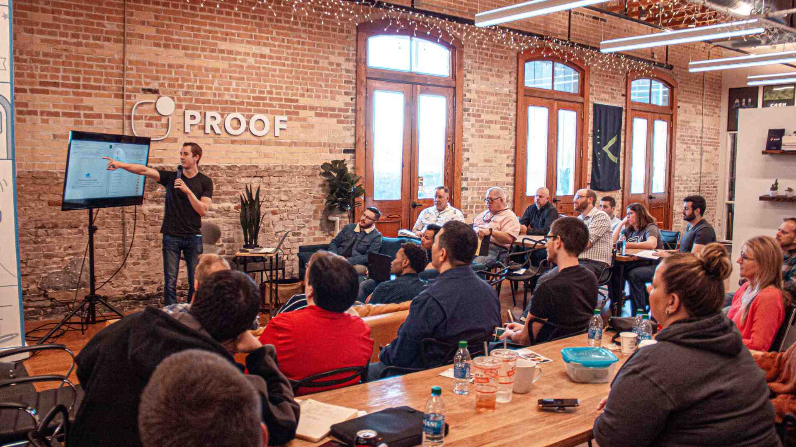

CULTURA ORGANIZACIONAL
O que é cultura organizacional?
A cultura organizacional de uma empresa se refere às crenças, valores e comportamentos compartilhados pelos membros de uma equipe. Ela influencia a maneira como as decisões são tomadas e como as pessoas interagem.
Pode incluir elementos como liderança, comunicação, trabalho em equipe e a abordagem em relação aos clientes e à inovação. A cultura organizacional tem um papel muito importante no desempenho de uma empresa.
Qual a importância de uma cultura organizacional?
A cultura organizacional é o reflexo da ética e da moral que a empresa possui, ela orienta de forma natural os caminhos a serem seguidos. É ela quem guia as decisões e prepara a empresa para o futuro. A cultura organizacional se destaca como um recurso estratégico. Por isso, ela é importante para você definir como sua empresa se posiciona e se diferencia no mercado de trabalho. Uma cultura forte ajuda a atrair novos talentos alinhados aos valores da empresa, promove um ambiente de trabalho saudável e estimula a inovação.
Como posso incluir a cultura organizacional na minha empresa?
- Defina valores e missão: Estabeleça claramente os valores fundamentais e a missão da empresa. Eles devem orientar as ações diárias e refletir sobre a identidade da organização.
- Envolva os colaboradores: Inclua os colaboradores no processo de desenvolvimento da cultura organizacional. Ouça suas opiniões e feedbacks para garantir que a cultura organizacional seja inclusiva e representativa.
- Recompense comportamentos culturais: Reconheça e recompense os comportamentos que estão alinhados com a cultura desejada. Isso motiva os colaboradores.
- Treinamento e desenvolvimento: Ofereça treinamento que promova a compreensão e a incorporação da cultura organizacional. Certifique-se de que os colaboradores compreendam como os valores impactam no seu trabalho.
- Adaptação contínua: A cultura organizacional deve evoluir com a empresa. Esteja aberto a ajustes, especialmente a mudanças no ambiente de trabalho ou na composição da equipe.
Como a cultura organizacional impacta a tomada de decisões?
A cultura organizacional molda a mentalidade dos membros da equipe, influenciando a abordagem, o estilo e os princípios que guiam a tomada de decisões em todos os níveis da empresa.
Resumo
O apresentador inicia explicando o conceito de cultura organizacional e sua importância para as empresas.
O apresentador destaca que a cultura organizacional representa os valores da empresa e influencia diretamente o ambiente de trabalho, orientando decisões e preparando a empresa para o futuro. Ele enfatiza que não se trata apenas de manuais, mas sim de práticas diárias efetivas.
São apresentados seis tipos principais de cultura organizacional: Cultura de Pessoas, Cultura de Resultado, Cultura de Poder, Cultura de Inovação, Cultura de Tarefa e Cultura Holística. Cada uma com suas características específicas e focos diferentes.
O apresentador detalha seis passos práticos para implementar a cultura organizacional: começando pela mentalidade dos fundadores e líderes, passando pela montagem da equipe, treinamento de líderes, promoção da comunicação interna, incentivo a alinhamentos e reconhecimento de talentos.
Por fim, o apresentador ressalta a importância do endomarketing como ferramenta para fortalecer a cultura organizacional, melhorando a imagem da empresa internamente e valorizando os colaboradores.
Capítulos
- Definição de Cultura Organizacional: O apresentador introduz o conceito de cultura organizacional como a manifestação dos valores de uma empresa, explicando como isso influencia positiva ou negativamente os negócios.
- Importância da Cultura Organizacional: São apresentados os benefícios de uma cultura organizacional bem estabelecida, incluindo melhor ambiente de trabalho, maior engajamento da equipe e capacidade de atrair e reter talentos.
- Tipos de Cultura Organizacional: O apresentador detalha os seis tipos principais de cultura organizacional: Pessoas, Resultado, Poder, Inovação, Tarefa e Holística, explicando as características de cada uma.
- Implementação da Cultura Organizacional: São apresentados seis passos práticos para implementar a cultura organizacional, desde a mentalidade dos fundadores até o reconhecimento de talentos.
Itens de Ação
- O apresentador indica que os líderes devem explicar e demonstrar os valores da empresa aos colaboradores
- O apresentador recomenda criar canais que facilitem a comunicação interna
- O apresentador sugere promover alinhamentos periódicos para otimização de tarefas
- O apresentador orienta reconhecer e recompensar colaboradores que se destacam
- O apresentador recomenda implementar estratégias de endomarketing para fortalecer a cultura organizacional
Resumo
Os cientistas conduziram uma experiência social com cinco macacos, colocando uma escada com bananas no topo. Inicialmente, quando um macaco tentava subir a escada, os cientistas molhavam os outros com água fria.
Após algum tempo, os macacos começaram a impedir qualquer tentativa de subir a escada através de agressões físicas. Os cientistas então começaram a substituir os macacos originais, um por um.
Cada novo macaco introduzido tentava subir a escada, mas era imediatamente agredido pelos outros, incluindo aqueles que nunca tinham experimentado o jato de água fria. Este comportamento continuou mesmo depois de todos os macacos originais terem sido substituídos.
O experimento demonstrou como comportamentos podem ser perpetuados em um grupo mesmo quando a razão original para tal comportamento já não existe, ilustrando como culturas organizacionais podem manter práticas sem questionar suas origens.
Capítulos
- Configuração inicial do experimento: Os cientistas organizaram uma experiência com cinco macacos, uma escada e bananas, usando água fria como elemento disciplinador.
- Desenvolvimento do comportamento coletivo: Os macacos começaram a agredir qualquer um que tentasse subir a escada, estabelecendo um padrão de comportamento preventivo.
- Processo de substituição e adaptação: Os cientistas começaram a substituir os macacos originais, observando como os novos membros adotavam o comportamento agressivo sem experienciar a punição original.
- Conclusão do experimento: Ao final, nenhum dos macacos presentes havia experimentado o banho frio, mas todos mantinham o comportamento agressivo.
- Reflexão sobre comportamento cultural: A conclusão demonstra como práticas podem ser mantidas sem questionamento, simplesmente porque 'sempre foram assim'.
Itens de Ação
- Os cientistas estabeleceram um experimento com cinco macacos e bananas
- Os cientistas implementaram um sistema de punição com água fria
- Os cientistas realizaram substituições sistemáticas dos macacos
- Os cientistas observaram a perpetuação do comportamento sem a causa original